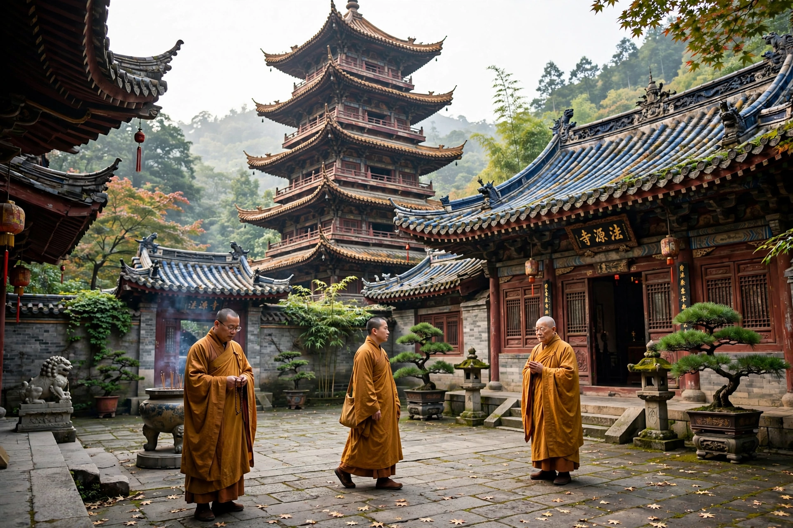

 The Leshan Giant Buddha, Sichuan | |
| Introduced | 1st century CE (Han dynasty) |
|---|---|
| Major schools | Chan (Zen), Pure Land, Tiantai, Huayan |
| Key figures | Kumārajīva, Xuanzang, Huineng, Zhiyi |
| Languages | Chinese (sutra translations); Classical Chinese canon |
Buddhism first reached China from India along the Silk Road during the Han dynasty, probably in the 1st century CE. Over the following centuries it was translated, adapted, and deeply integrated into Chinese civilization, giving rise to distinctive schools such as Tiantai, Huayan, Pure Land, and Chan (known in Japan as Zen). Chinese Buddhism became the vehicle by which Buddhism spread to Korea, Japan, and Vietnam, and it remains one of the major religions of China today.
Buddhist missionaries and merchants from Central Asia arrived during the Eastern Han. A famous legend tells of Emperor Ming's dream of a golden man and the founding of the White Horse Temple at Luoyang. From the 2nd to the 6th centuries, translation bureaus rendered Sanskrit texts into Chinese; the translator Kumārajīva (344–413) produced influential versions of the Lotus Sutra and Madhyamaka works, while the pilgrim Faxian traveled to India in search of texts. The monk Xuanzang (602–664) made a celebrated journey to India and translated a vast corpus, inspiring the classic novel Journey to the West.
Under the Sui and Tang dynasties, native schools — Tiantai founded by Zhiyi, Huayan, Pure Land, and Chan — systematized doctrine. Buddhism enjoyed imperial patronage and enormous cultural influence, visible in the cave temples of Longmen and Dunhuang. It also suffered periodic suppression, most severely the Great Anti-Buddhist Persecution of 842–845 under Emperor Wuzong, which destroyed tens of thousands of temples and monasteries.
During the Song dynasty, Chan became dominant among elites and Pure Land practice widespread among laity; the two often merged. Buddhism declined institutionally under later dynasties amid Neo-Confucian ascendancy, but remained woven into popular religion. In the 20th century, reformers such as Taixu sought modernization; temples were damaged during the Cultural Revolution, and since the 1980s Buddhism has experienced a substantial revival, with temples rebuilt and millions of adherents.
Chinese Buddhism reshaped Chinese philosophy, literature, art, and architecture — introducing pagodas, cave-temple art, and new vocabulary — and, through the Chinese Buddhist canon, provided the foundation for Buddhism throughout East Asia.